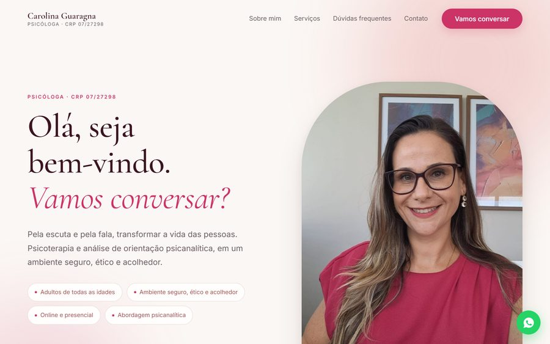
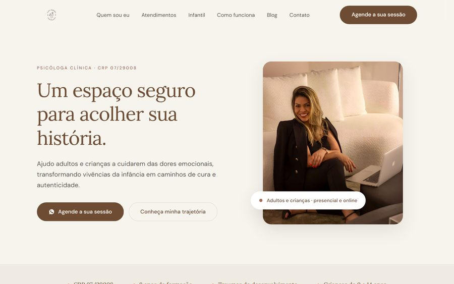
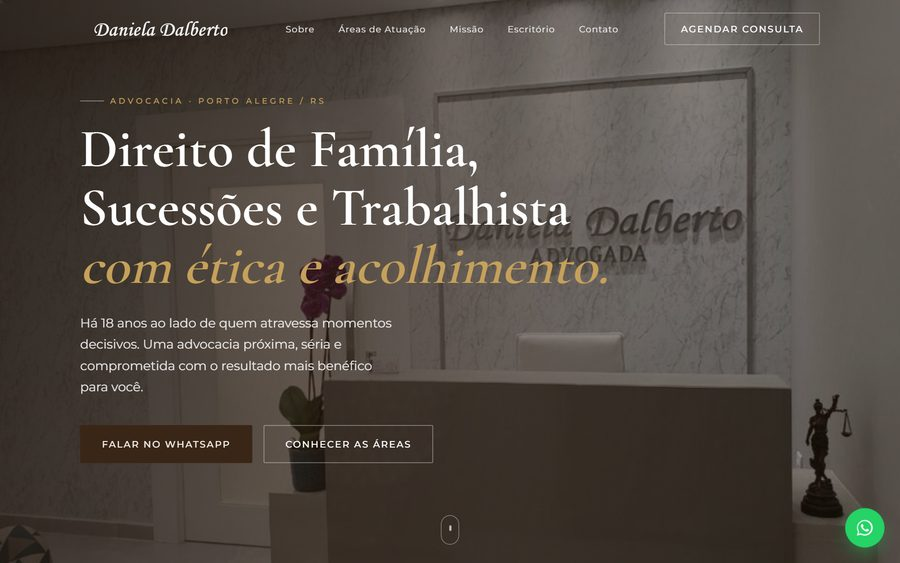
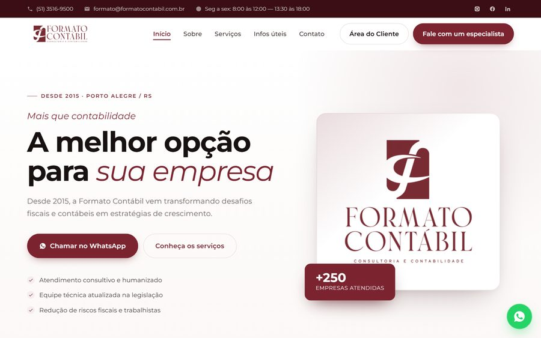
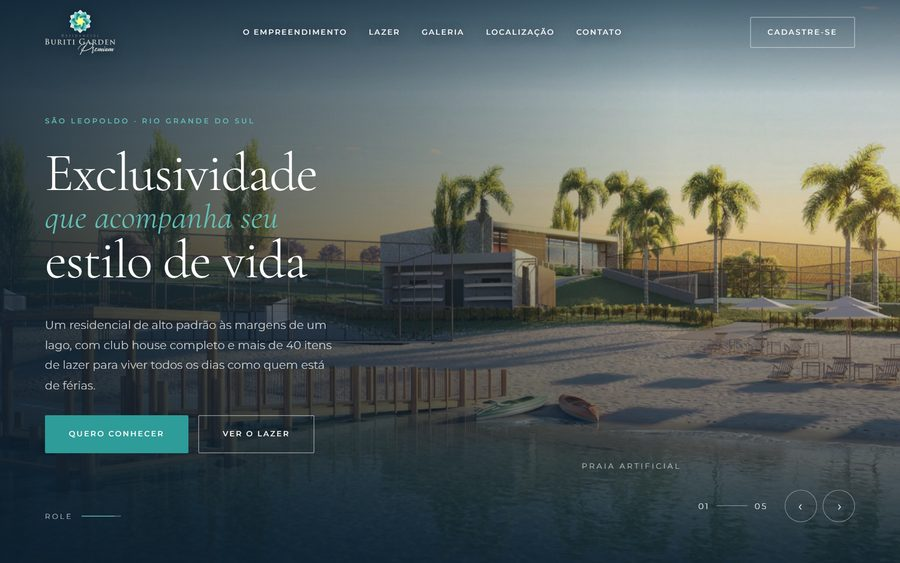
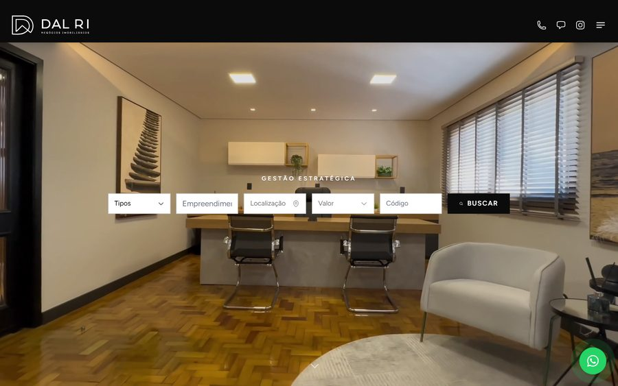

Sites e sistemas
Sites, landing pages e sistemas sob medida. Desenvolvimento acelerado por IA com revisão minha linha a linha.
Valmir da Silva — desenvolvedor e designer
Presença digital do seu negócio, do briefing ao ar.
Sites, sistemas, lojas virtuais, tráfego pago e vídeo — com o desenvolvimento e o design na mesma mão.
↓ role para andar pela cidade
PARADA · CONFIGURADOR
Monte o seu projeto
Escolha o que precisa e eu te mostro como vira um projeto só.
01 · SERVIÇOS
Seis frentes que normalmente vivem em fornecedores diferentes. Aqui é a mesma pessoa tocando todas.
Sites, landing pages e sistemas sob medida. Desenvolvimento acelerado por IA com revisão minha linha a linha.
E-commerce do catálogo ao checkout, com pagamento integrado e um painel que você opera sozinho.
Meta Ads e Google Ads: estrutura de conta, públicos, criativos e acompanhamento de resultado.
Identidade visual, peças para redes e material impresso. Photoshop e Canva, alinhados à marca.
Cortes e edição para redes e apresentações. Captação de imagens em solo quando o projeto pede.
Site, formulários, CRM e IA conectados — o atendimento deixa de depender de digitação manual.
02 · SKILLS
O que eu domino hoje, do código ao anúncio. IA acelera o trabalho pesado; a curadoria e a decisão são minhas.
▮▮▮ domínio · ▮▮ sólido · ▮ em evolução
03 · MÉTODO
IA como ferramenta, nunca como piloto automático. A máquina acelera o trabalho pesado; a curadoria e a decisão do que fica são minhas.
Entendo o que o negócio precisa, o público e o orçamento. Saio com uma proposta de projeto inteiro.
Site, sistema, artes e campanhas tomam forma. Você acompanha e ajusta enquanto dá tempo.
Lançamento, divulgação e acompanhamento. Você fica com um painel que consegue operar.
04 · PROJETOS
Negócios reais que passaram por mim — do site novo à integração de CRM e ao tráfego pago. Clique para ver a apresentação de cada um.

Consultório de psicologia e psicanálise em Porto Alegre. Site editorial e acolhedor, com caminho direto até o agendamento.
ver apresentação →
Psicóloga clínica — adultos e crianças. Tom terroso e calmo, seção infantil dedicada e trilha "como funciona".
ver apresentação →
Advocacia de Família, Sucessões e Trabalhista. Tom de autoridade, áreas de atuação escaneáveis e agendamento fixo.
ver apresentação →
Contabilidade em Porto Alegre desde 2015. Prova social em destaque, serviços organizados e acesso à Área do Cliente.
ver apresentação →
Loteamento de alto padrão em São Leopoldo/RS. Hero cinematográfico, galeria de 40+ ambientes e captação de leads.
ver apresentação →
Imobiliária de alto padrão em Novo Hamburgo. Site refeito do zero, integração com o CRM Loft e gestão de tráfego pago.
ver apresentação →05 · FIM DA LINHA
Me conta o que o seu negócio precisa. Retorno com uma ideia do projeto completo, sem compromisso.